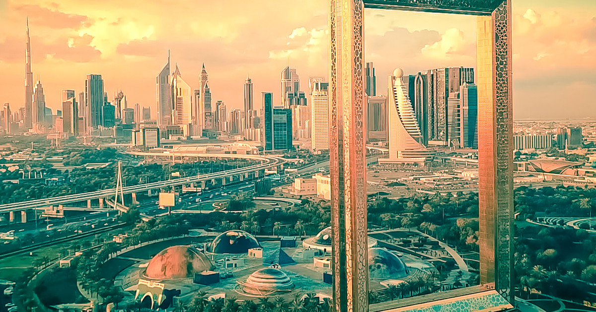

Dubai
Dubaj (arab. دبي, Dubayy) – największe miasto w Zjednoczonych Emiratach Arabskich. Stolica emiratu Dubaj. Położone na południowym wybrzeżu Zatoki Perskiej. W 2019 liczył ok. 3,3 mln mieszkańców. W 2018 Dubaj odwiedziło 16,66 mln turystów z całego świata – był czwartym najczęściej odwiedzanym miastem świata po Bangkoku, Londynie i Paryżu[3].
opis oferty
Po śniadaniu zwiedzanie nowych części Dubaju. Odwiedzimy dzielnicę najwyższych apartamentowców świata, Marinę. Dla chętnych możliwość rejsu jachtem kanałami pomiędzy drapaczami chmur - najlepsza sposobność do podziwiania tej dzielnicy (płatne dodatkowo około 30 USD/os.). Kolejno przejedziemy na słynny archipelag sztucznie usypanych wysp Palm Jumeirah, na którego końcu usytuowany jest hotel Atlantis. Odwiedzimy w nim akwarium Lost Chambers zamieszkiwane przez około 65000 morskich zwierząt. Na ląd wrócimy kolejką magnetyczną Mono Rail, z której wyraźnie widać założenie palmy i jej zabudowę. Przejedziemy także na plażę Jumeirah, gdzie będzie okazja sfotografowania jednej z najbardziej rozpoznawalnych ikon miasta - nawiązującego kształtem do żagla hotelu Burj Al-Arab. Odwiedzimy także kompleks Madinat Jumeirah, nazywany Dubajską Wenecją. Przejazd do pobliskiego centrum handlowego Mall of the Emirates, w którym znajduje się m.in. pierwszy na Bliskim Wschodzie kryty stok narciarski a następnie do ogrodów Dubai Miracle Gardens (czynne sezonowo, zwykle od przełomu listopada i grudnia). Na koniec odwiedzimy Ras Al Khor Sanctuary, gdzie podejdziemy do kilkuset flamingów brodzących w naturalnych warunkach w rozległym ogrodzie i zrobimy zdjęcia z tymi niezwykłymi ptakami. Powrót do hotelu w Dubaju lub okolicy obiadokolacja (fakultatywnie) i nocleg. (Trasa ok. 100km). Wieczorem (dla chętnych, cena ok.110 USD/os) proponujemy wieczorny spektakl "La Perle" - połączenie gry światła i wody - budzącej podziw scenografii (z ruchomą sceną) oraz nadzwyczajnymi umiejętnościami kaskaderów, akrobatów i aktorów. Przedstawienie przenosi nas w krainę wodospadów, które płyną kilka metrów od miejsc na widowni a także w tętniące życiem miasto będące tłem do imponującego występu motocyklowych kaskaderów w ogromnej metalowej perle. Całość oprawiona doskonale dobraną muzyką co gwarantuje niezapomniane wrażenia.
| Data | Cena | Ilosc gwiazdek hotel |
|---|---|---|
| 12.03.2020 | 12999pln | 5 |
| 15.03.2020 | 17000pln | 4 |
| 18.03.2020 | 18000pln | 4.5 |